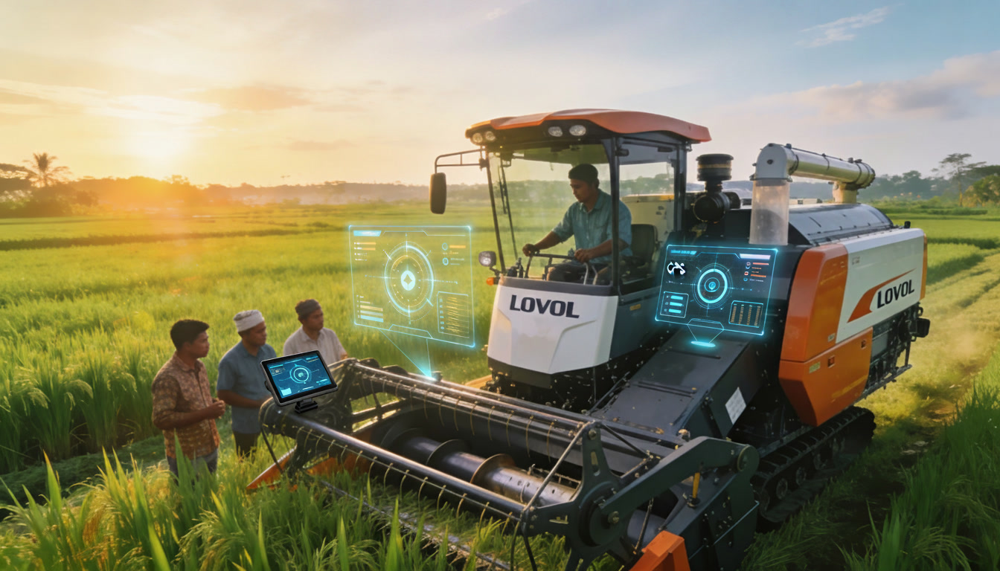
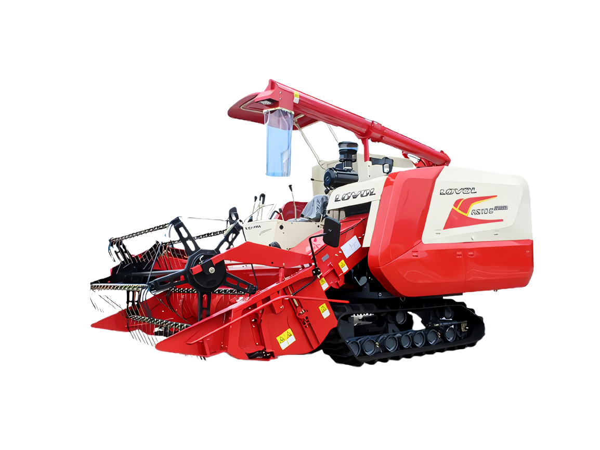
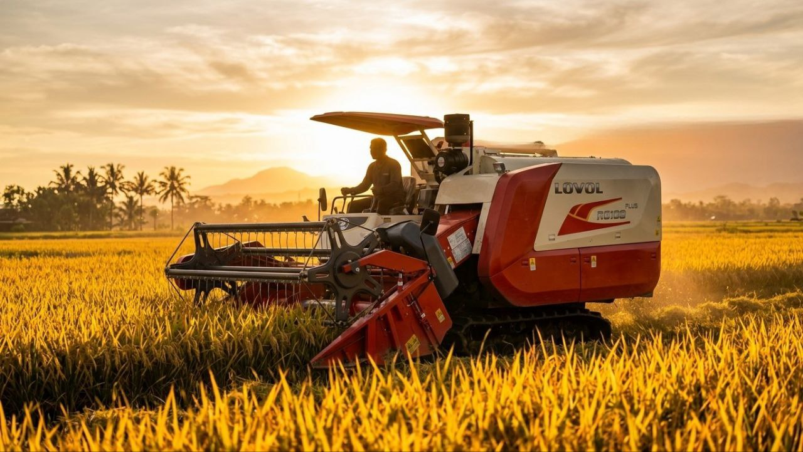
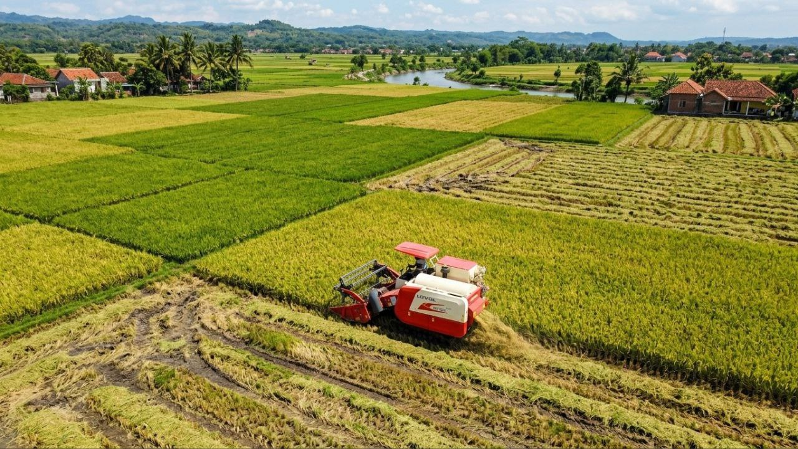
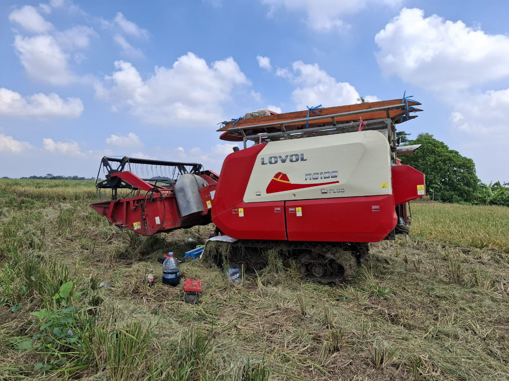

Berbagai informasi seputar mesin pertanian, tips perawatan combine harvester dan tractor, serta teknologi pertanian modern.

05 Januari 2026 · 🕐 4 menit baca
Lovol merupakan salah satu produsen mesin pertanian terkemuka yang menghadirkan teknologi modern untuk mendukung pertanian Indonesia.

15 Januari 2026 · 🕐 3 menit baca
Memilih combine harvester yang sesuai dengan kondisi lahan sangat penting agar pekerjaan pengolahan tanah lebih efisien dan hasil panen lebih maksimal.

05 Februari 2026 · 🕐 4 menit baca
Combine harvester Lovol memiliki teknologi modern yang mampu meningkatkan efisiensi panen serta menghemat tenaga kerja.

15 Februari 2026 · 🕐 3 menit baca
Combine harvester merupakan mesin pertanian modern yang mampu memotong, merontokkan, dan membersihkan padi dalam satu proses.

08 Maret 2026 · 🕐 3 menit baca
Perawatan rutin pada combine harvester sangat penting agar mesin tetap bekerja optimal saat musim panen tiba.
Artikel tidak ditemukan 😔
Coba kata kunci lain